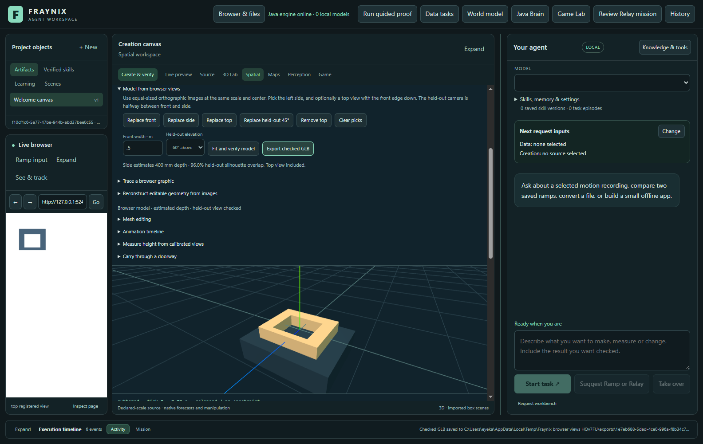
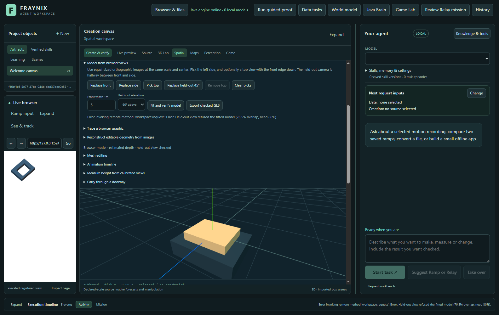
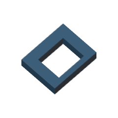
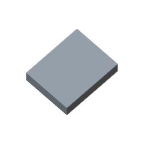

Recover a through-opening with a top view
Fit an optional top capture and verify the resulting geometry against a separate elevated view.
The same elevated witness scores 76.5% against the filled control and 96.0% against the top-assisted model. Blender measured the corrected volume at 12.5 L.

The top-assisted model passes the elevated witness

The same elevated witness refuses the filled model

Separate Blender render of the original plate

Blender render of the filled two-view control
Blender render of the corrected model
System files
Open source